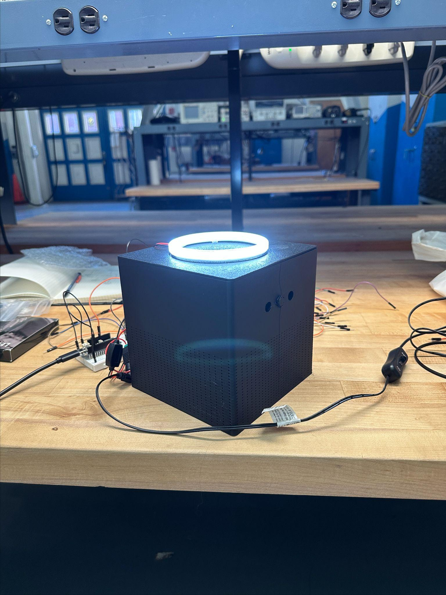
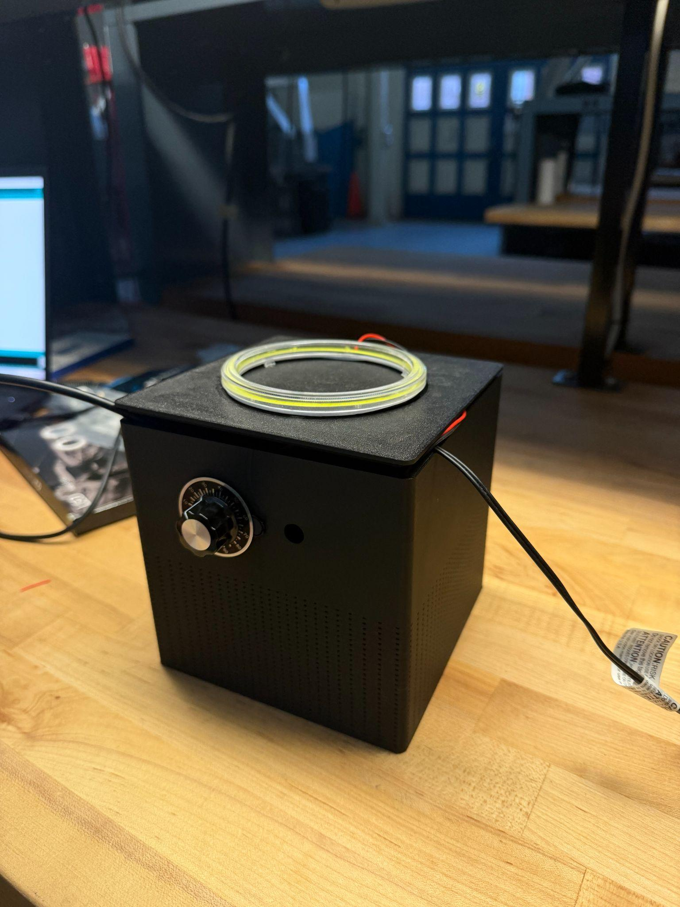
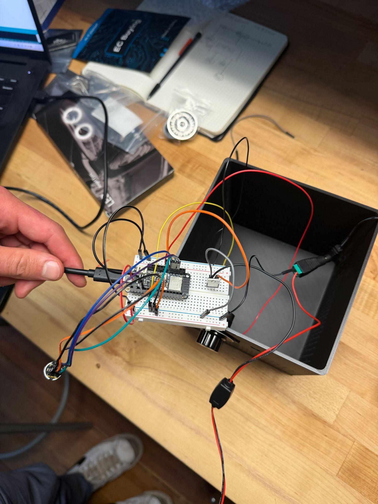
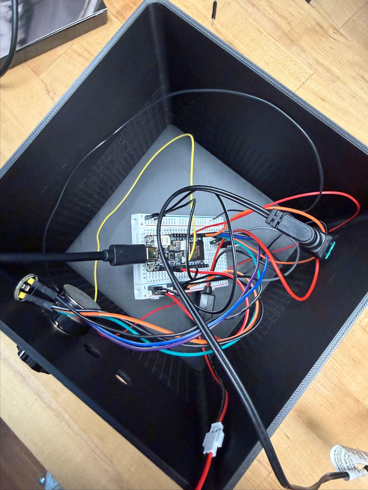
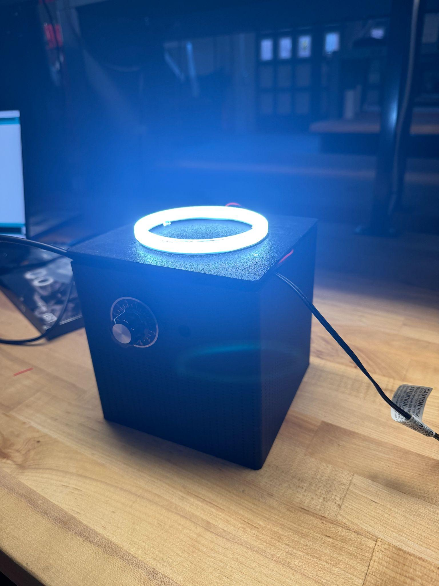
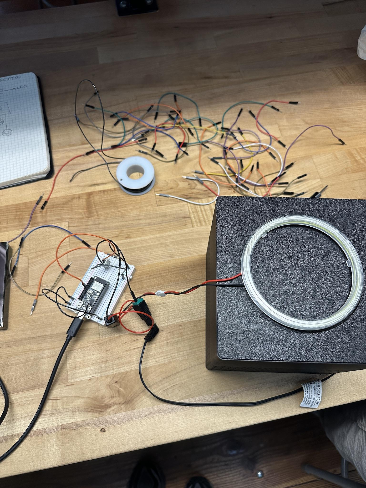

HushLight: Automated Noise-Deterrent Device for Shared Living
- Course: ME 110 - Product Development
- Relevant Skills: Product Development, Customer Discovery, Concept Selection, ESP32, MEMS Microphone Sensing, LED Deterrent Systems, Circuit Prototyping, 3D Printing, BOM/Costing, User Testing
Background
HushLight addresses a common systems problem in dorms, apartments, and shared houses: noise conflicts that affect sleep and focus, but are awkward to resolve through repeated direct confrontation. Existing noise-monitoring products mostly serve landlords or short-term rental hosts by sending delayed notifications. HushLight instead closes the feedback loop locally, sensing ambient sound and giving the noise-maker immediate visual feedback at the source.
The product is a compact tabletop electromechanical device that monitors ambient sound level, compares the signal to a user-defined threshold, and switches a high-brightness LED ring when the room becomes too loud. The device is privacy-preserving by design: it processes sound level only and does not record, store, or transmit audio content.
Goals
- Create a non-confrontational way to reduce disruptive noise in shared living spaces
- Provide clear feedback within seconds of a noise threshold being exceeded
- Support adjustable quiet expectations across different schedules and living situations
- Keep the product affordable for student users, with a target retail price under $50
- Build a functional prototype that is compact, easy to set up, and visually understandable without explanation
Customer Needs and Product Specs
Customer research highlighted seven major needs: non-confrontational operation, immediate feedback, undisturbed sleep and focus, adjustable thresholds and scheduling, privacy preservation, ease of setup, affordability, and support for positive roommate dynamics. I translated those needs into engineering specifications for enclosure footprint, response time, threshold control, power architecture, and cost.
- Footprint: Under 20 cm x 20 cm for dorm and apartment use
- Response Time: LED activation within 2 seconds of threshold crossing
- Threshold Control: User-adjustable sound threshold, with future support for scheduled quiet hours
- Activation Delay: Adjustable delay window to reject short transient sounds
- Privacy: No audio recording or storage; dB-level processing only
- Cost: Manufacturing cost target under $20 and retail price target under $50
- Setup: Plug-and-play setup in under 1 minute for an inexperienced user
Concept Selection
The concept phase explored 60 possible interventions, then narrowed them into finalists across visual alerts, distributed systems, directional deterrents, mechanical alerts, and passive mitigation. A weighted decision matrix compared each concept against deterrence effectiveness, build feasibility, market differentiation, prototype cost, usability, and integration risk.
The selected prototype used a simple, high-impact architecture: a 3D-printed enclosure with a MEMS microphone, threshold knob, on/off switch, MOSFET-switched LED ring, and ESP32 controller. This kept the electronics extensible while reducing build risk enough to fabricate, wire, and test within the semester.
Design and Implementation
- System Architecture:
- ESP32 DevKit V1 reads microphone data, computes sound level, reads the threshold knob, and controls the LED output
- INMP441 I2S MEMS microphone captures ambient sound for dB-level processing without storing audio
- 12V COB LED ring provides the visual deterrent when the sound threshold is exceeded
- Logic-level MOSFET switches the 12V LED ring from a 3.3V ESP32 GPIO signal
- Electrical Design:
- Single 12V wall supply powers the LED ring and steps down for the microcontroller electronics
- Panel-mounted potentiometer gives the user physical threshold control
- Gate resistor, pull-down resistor, and bulk capacitance improve switching reliability and startup behavior
- Breadboard prototype validated the sensing and LED control loop before a future PCB or perfboard revision
- Mechanical Prototype:
- 3D-printed enclosure creates a compact tabletop form factor with the LED ring visible on the front face
- Front-panel controls preserve a simple, appliance-like interaction model
- Internal volume houses the ESP32, microphone module, switching electronics, and wiring
Testing and Observations
The assembled prototype demonstrated the full sensing-control-output loop: the microphone detected elevated sound, the ESP32 filtered the signal and triggered the output logic, and the LED ring clearly communicated that the room was too loud. Early user reactions were positive because the signal was immediately understandable and felt more neutral than a direct confrontation.
- Microphone threshold detection worked reliably during initial qualitative testing
- LED ring activation was visible enough to function as a deterrent in a shared room
- Moving-average detection helped reject short transient sounds such as isolated impacts
- Prototype form factor fit the target footprint and remained small enough for common-area placement
- Identified improvements included potentiometer calibration, softer diffusion, cleaner internal wiring, and broader quantitative user testing
Business Model and Market Fit
HushLight targets college students and young adults in shared housing, with secondary opportunities in university housing, family homes, and light-duty shared workspaces. The business model centers on a direct-to-consumer hardware sale, campus bookstore distribution, and future bulk sales to housing programs.
The value proposition is a privacy-first, no-subscription device that reduces noise at the source. Unlike landlord-oriented monitors or passive solutions like headphones and white noise, HushLight is designed for the person living with the disruption and gives the room an immediate shared signal.
Outcome and Next Steps
- Built and tested a functional noise-triggered LED deterrent prototype
- Validated the core interaction: sound exceeds threshold, device responds, users understand the alert
- Kept the hardware architecture low-cost enough to remain compatible with the under-$50 retail goal
- Defined next revision work: custom PCB or fixed perfboard, calibrated threshold dial, diffuser, app-based scheduling, noise event history, and ESP-NOW multi-unit support
Demonstration Video
Image Gallery (Click to zoom):





